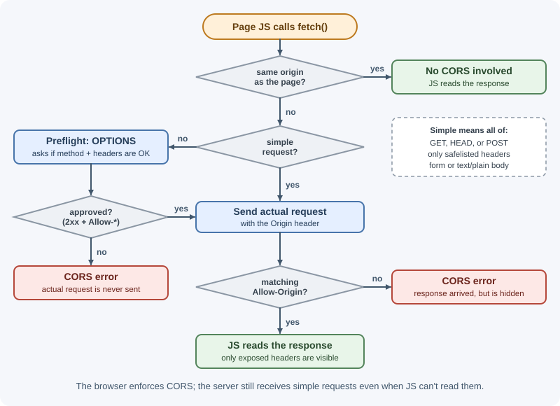
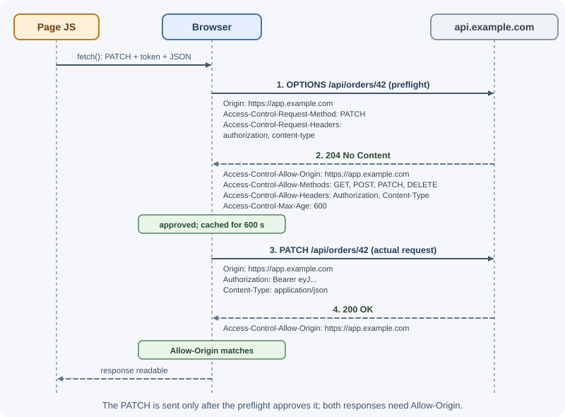
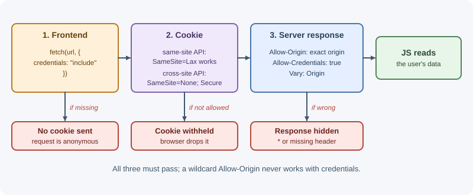

CORS (Cross-Origin Resource Sharing)¶
CORS is the mechanism that lets a server tell browsers which other websites
may read its responses. Browsers block a page's JavaScript from reading
responses from a different origin unless the server explicitly allows it with
Access-Control-* headers. Almost every frontend-backend setup runs into CORS
at some point, so it pays to understand exactly how it works.
Why it matters¶
- If your frontend at
https://app.example.comcalls an API athttps://api.example.com, the browser enforces CORS. Without the right headers, every request fails with a "blocked by CORS policy" error, even though the server handled it. - A misconfigured CORS policy can let a malicious site read your users' private data using their logged-in session.
- CORS errors are among the most confusing errors in web development because the browser hides the real response. Knowing the rules turns hours of guessing into a two-minute fix.
Real-world usage¶
- GitHub's REST API allows any origin. GitHub's docs state that the
REST API
supports CORS for AJAX requests from any origin.
Its sample response shows
Access-Control-Allow-Origin: *and anAccess-Control-Expose-Headerslist (ETag,Link,x-ratelimit-*, and others) so browser code can read pagination and rate-limit headers. - Amazon S3 buckets carry their own CORS configuration. The S3 user guide describes configuring a bucket so JavaScript on a website can make cross-origin requests to it, and hosting web fonts in a bucket, because browsers require a CORS check before loading web fonts from another origin.
- Amazon API Gateway makes proxy backends responsible for CORS. For
Lambda proxy and HTTP proxy integrations,
your backend is responsible for returning
Access-Control-Allow-Origin,-Allow-Methods, and-Allow-Headers, because a proxy integration does not return an integration response. Forgetting this in the Lambda function is a common cause of CORS errors.
How it works¶
The same-origin policy¶
An origin is the combination of scheme + host + port. Two URLs have the same origin only if all three match. The path does not matter.
Compared with https://app.example.com (port 443 implied):
| URL | Same origin? | Why |
|---|---|---|
https://app.example.com/orders |
Yes | Only the path differs |
https://app.example.com:443/ |
Yes | 443 is the default HTTPS port |
http://app.example.com/ |
No | Different scheme |
https://api.example.com/ |
No | Different host (subdomains count) |
https://example.com/ |
No | Different host |
https://app.example.com:8443/ |
No | Different port |
http://localhost:5173 vs http://localhost:3000 |
No | Different ports |
The same-origin policy is the browser rule that a page's scripts may only read responses from their own origin. It does not stop everything cross-origin:
| Allowed across origins by default | Blocked by default |
|---|---|
| Loading images, scripts, stylesheets, fonts (fonts need CORS), iframes | Reading the response of fetch() or XMLHttpRequest |
| Submitting an HTML form to another site | Reading pixels of a cross-origin image drawn on a canvas |
| Following links and redirects | Reading another origin's DOM, cookies, or storage |
Why the policy exists¶
Browsers attach cookies to requests automatically. Without the same-origin policy, any site you visit could run:
// On https://evil.example, while you are logged in to your bank
const res = await fetch("https://bank.example/api/accounts", { credentials: "include" });
const data = await res.json(); // your balances, sent to the attacker
The request would carry your bank session cookie, and the attacker's script could read the answer. The same-origin policy blocks the read. CORS is the controlled way to relax it for origins the server trusts.
What CORS is¶
- The browser adds an
Originheader to cross-origin requests. - The server decides whether that origin is allowed and answers with
Access-Control-Allow-*headers. - The browser compares the headers with the request. If they allow it, the page's JavaScript gets the response; if not, the browser throws a network error and hides the response.
Two consequences surprise most people:
- The server still receives and processes simple requests. CORS blocks the page from reading the response, not the request from arriving.
- CORS is enforced only by browsers. curl, Postman, mobile apps, and server-to-server calls ignore it completely. CORS is not an access control system for your API.

Simple requests¶
A request is "simple" (the specification says it needs no preflight) when all of these are true:
- The method is
GET,HEAD, orPOST. - The only headers set by the page are CORS-safelisted ones:
Accept,Accept-Language,Content-Language,Content-Type, and a simple single-rangeRange. Content-Type, if present, is one ofapplication/x-www-form-urlencoded,multipart/form-data, ortext/plain.- There is no streaming request body and no upload progress listener.
The browser sends the request directly with an Origin header and checks
the response:
Browser (page on https://app.example.com) Server (api.example.com)
| |
|--- GET /api/products ------------------------------>|
| Origin: https://app.example.com |
| | handles request
|<-- 200 OK ------------------------------------------|
| Access-Control-Allow-Origin: https://app.example.com
| Content-Type: application/json |
| |
| Allow-Origin matches -> JavaScript can read the body |
If Access-Control-Allow-Origin is missing or does not match, the response
still arrived, but the browser refuses to give it to JavaScript.
Preflighted requests¶
Anything that is not simple needs permission first. That includes:
PUT,PATCH,DELETE, or any other method.Content-Type: application/json(yes, almost every JSON API call).- An
Authorizationheader or any custom header such asX-Request-Id.
The browser first sends an OPTIONS request, the preflight, describing
what it intends to do. Only if the server approves does it send the real
request.

Points to note:
- The preflight carries no cookies or Authorization header. Your
authentication middleware must not reject
OPTIONSrequests, or every preflight fails. - The preflight response must have an OK status (200-299).
204is conventional. - The actual response also needs
Access-Control-Allow-Origin; passing the preflight is not enough. - Preflights must not be redirected. A
301fromhttp://tohttps://or from/ordersto/orders/breaks them.
Every CORS header¶
Request headers (set by the browser, never by your code)¶
| Header | Sent on | Meaning |
|---|---|---|
Origin |
Every CORS request (cross-origin fetch() or XHR, including preflights), WebSocket handshakes, and any request whose method is not GET or HEAD. Not on plain cross-origin image, script, or stylesheet loads |
The origin of the page making the request |
Access-Control-Request-Method |
Preflight | The method the real request will use |
Access-Control-Request-Headers |
Preflight | The non-safelisted headers the real request will send, lowercase, comma-separated |
Response headers (set by your server)¶
| Header | Sent on | Meaning |
|---|---|---|
Access-Control-Allow-Origin |
Preflight and actual response | The single origin allowed to read the response, or * for any origin (not with credentials) |
Access-Control-Allow-Methods |
Preflight | Methods allowed for the actual request |
Access-Control-Allow-Headers |
Preflight | Request headers the actual request may include |
Access-Control-Allow-Credentials |
Preflight and actual response | true lets the browser send cookies and expose the response for credentialed requests |
Access-Control-Expose-Headers |
Actual response | Response headers that JavaScript may read beyond the safelisted ones |
Access-Control-Max-Age |
Preflight | Seconds the browser may cache this preflight result |
Details for each:
Access-Control-Allow-Originholds exactly one value: one origin or*. A comma-separated list is invalid. To allow several origins, check the request'sOriginagainst an allowlist and echo back the matching one.Access-Control-Allow-Methodslists methods such asGET, POST, PATCH, DELETE. Simple methods are always allowed.*works only for requests without credentials.Access-Control-Allow-Headersmust include every header named inAccess-Control-Request-Headers, such asAuthorization, Content-Type. The*wildcard works only without credentials, and it never coversAuthorization, which must be listed by name.Access-Control-Allow-Credentials: trueis required when the frontend sends cookies (credentials: "include"). Without it, the browser hides the response.Access-Control-Expose-Headers: by default JavaScript can read only the safelisted response headers:Cache-Control,Content-Language,Content-Length,Content-Type,Expires,Last-Modified, andPragma. To readX-Request-Id,Location, or a rate-limit header, list it here.Access-Control-Max-Ageavoids a preflight before every request. If absent, browsers cache the result for about 5 seconds. Browsers also cap it (Chromium at 2 hours, Firefox at 24 hours), so very large values are pointless.
Credentials: cookies and CORS¶
By default, cross-origin fetch() does not send cookies. To send them:
await fetch("https://api.example.com/api/me", { credentials: "include" });
// XMLHttpRequest equivalent: xhr.withCredentials = true;
For a credentialed request, the server must respond with:
Access-Control-Allow-Originset to the exact requesting origin, never*.Access-Control-Allow-Credentials: true.- No
*inAllow-Methods,Allow-Headers, orExpose-Headers(it is treated literally, not as a wildcard).
The cookies themselves must also be allowed to travel. That depends on
site, not origin. A site is the scheme plus the registrable domain:
app.example.com and api.example.com are different origins but the
same site (example.com).
| Frontend | API | Relationship | Cookie needs |
|---|---|---|---|
https://app.example.com |
https://api.example.com |
Cross-origin, same-site | SameSite=Lax (or Strict) works |
https://myshop.dev |
https://api.example.com |
Cross-site | SameSite=None; Secure, and browsers increasingly block such third-party cookies |

The practical advice: host the frontend and API on the same site (or behind one domain with a reverse proxy) when you use cookie authentication. See sessions, cookies, and JWT.
Vary: Origin and caches¶
If your server returns a different Access-Control-Allow-Origin depending
on the request's Origin, add Vary: Origin. Otherwise a CDN or browser
cache may store the response for https://a.example.com and serve it, with
the wrong header, to https://b.example.com, which then gets a CORS error
seemingly at random.
Dynamic allowlists and their dangers¶
Most real APIs keep a list of allowed origins and echo back the matching one. Implement the comparison carefully:
| Approach | Problem |
|---|---|
Echo back any Origin with Allow-Credentials: true |
Any website can read your users' data. This is the worst CORS misconfiguration |
origin.endsWith("example.com") |
Matches https://evilexample.com |
origin.includes("example.com") |
Matches https://example.com.attacker.net |
Unanchored regex /example\.com/ |
Same as includes |
Allowing the null origin |
Sandboxed iframes, file:// pages, and some redirects send Origin: null; an attacker can produce it on purpose |
Exact match against a Set of full origins |
Correct |
Anchored regex /^https:\/\/[a-z0-9-]+\.example\.com$/ |
Correct for "any subdomain over HTTPS", if you trust all subdomains |
Access-Control-Allow-Origin: * without credentials is safe for genuinely
public, non-personalized data (a public product catalog, open data APIs),
because no cookies are involved.
CORS and error responses¶
When your app throws and an error handler (or a proxy error page) returns
500 without CORS headers, the browser reports a CORS error instead of
the 500. Register CORS middleware before your routes so every response,
including errors and 404s, carries the headers. Then the frontend sees the
real status.
CORS vs CSRF¶
They are often confused but solve different problems:
- CORS controls whether a page can read a cross-origin response.
- CSRF (cross-site request forgery) abuses the fact that browsers
send cookies with cross-site requests, even when the attacker cannot
read the response. A hidden form on an evil site can still submit
POST /api/transferwith the victim's cookie.
CORS does not prevent CSRF, because simple requests are sent and processed
before any CORS check. Protect cookie-authenticated, state-changing endpoints
with SameSite cookies, CSRF tokens, or Origin header checks. A permissive
CORS policy makes things worse: it lets an attacker read responses too. See
web security fundamentals.
Where CORS does not apply¶
- curl, Postman, Insomnia, and other HTTP tools.
- Mobile and desktop apps making native HTTP calls.
- Your backend calling another backend.
- Same-origin requests.
That is why "it works in Postman but not in the browser" is the classic CORS symptom. It also means CORS is no substitute for authentication and authorization.
Avoiding CORS with a proxy¶
If the browser only ever talks to one origin, there is no cross-origin request and no CORS:
- In development: the frontend dev server (Vite, Next.js) proxies
/apito the backend on another port. - In production: a reverse proxy serves the frontend and forwards
/apito the backend under the same domain. See reverse proxy.
When to use and when not to use¶
Configure CORS with an allowlist when:
- A browser app on one origin must call an API on another origin that you
control, such as
app.example.comcallingapi.example.com. - Several known frontends (web app, admin app, partner portal) share one API.
Use Access-Control-Allow-Origin: * only when:
- The data is public and not personalized, and requests carry no cookies.
- You want any website to be able to read it, like a public open-data API.
Do not use CORS (avoid the cross-origin request instead) when:
- You control both frontend and backend and can serve them from one origin behind a reverse proxy, especially with cookie authentication.
- The caller is not a browser: servers, mobile apps, and CLIs ignore CORS, so it adds nothing for them.
| Option | Cookie auth works easily | Preflight cost | Risk if misconfigured | Best for |
|---|---|---|---|---|
| Same origin via reverse proxy | Yes | None | Low | Your own frontend and API |
| CORS with exact-origin allowlist | Yes (same-site), with credentials |
Yes, cacheable with Max-Age |
Data leaks if origins are matched loosely | Separate frontend and API origins |
Access-Control-Allow-Origin: * |
No (credentials not allowed) | Yes | Low for public data | Public, non-personalized APIs |
| Reflect any origin with credentials | Yes | Yes | Any site can read user data | Never |
Practical examples¶
Express with the cors package¶
import express from "express";
import cors from "cors";
const app = express();
const allowedOrigins = new Set([
"https://app.example.com",
"http://localhost:5173", // Vite dev server
]);
app.use(
cors({
origin(origin, callback) {
// No Origin header: same-origin or non-browser client (curl, server-to-server)
if (!origin || allowedOrigins.has(origin)) return callback(null, true);
return callback(null, false); // no CORS headers -> browser blocks the read
},
credentials: true, // allow cookies; sends Access-Control-Allow-Credentials: true
methods: ["GET", "POST", "PUT", "PATCH", "DELETE"],
allowedHeaders: ["Content-Type", "Authorization"],
exposedHeaders: ["X-Request-Id", "Location"],
maxAge: 600, // cache preflight for 10 minutes
}),
);
app.use(express.json());
// ...routes, then error handlers (they inherit the CORS headers set above)
app.listen(3000);
Registered first, this middleware also answers preflight OPTIONS requests
from allowed origins with 204, before authentication runs. Requests from
other origins get no CORS headers, so the browser blocks them. More options are covered in
configuring CORS in Express.
The same thing by hand¶
const allowedOrigins = new Set(["https://app.example.com"]);
app.use((req, res, next) => {
const origin = req.get("Origin");
res.vary("Origin"); // the response depends on Origin
if (origin && allowedOrigins.has(origin)) {
res.set("Access-Control-Allow-Origin", origin);
res.set("Access-Control-Allow-Credentials", "true");
res.set("Access-Control-Expose-Headers", "X-Request-Id");
}
// A preflight is an OPTIONS request carrying Access-Control-Request-Method
if (req.method === "OPTIONS" && req.get("Access-Control-Request-Method")) {
res.set("Access-Control-Allow-Methods", "GET, POST, PUT, PATCH, DELETE");
res.set("Access-Control-Allow-Headers", "Content-Type, Authorization");
res.set("Access-Control-Max-Age", "600");
return res.sendStatus(204);
}
next();
});
The frontend side¶
// Token in a header: triggers a preflight because of Authorization + JSON
await fetch("https://api.example.com/api/orders", {
method: "POST",
headers: { "Content-Type": "application/json", Authorization: `Bearer ${token}` },
body: JSON.stringify({ productId: "p-42", quantity: 1 }),
});
// Cookie session: must opt in to sending credentials
const res = await fetch("https://api.example.com/api/me", { credentials: "include" });
console.log(res.headers.get("X-Request-Id")); // null unless exposed by the server
Simulating a preflight with curl¶
curl -i -X OPTIONS http://localhost:3000/api/orders \
-H "Origin: https://app.example.com" \
-H "Access-Control-Request-Method: POST" \
-H "Access-Control-Request-Headers: content-type, authorization"
Check that the response is 2xx and that the Access-Control-Allow-*
headers cover the method and headers you asked for. Repeat with
-H "Origin: https://evil.example" and confirm no Allow-Origin comes back.
A Vite dev proxy instead of CORS¶
// vite.config.js
import { defineConfig } from "vite";
export default defineConfig({
server: {
proxy: {
// Browser calls http://localhost:5173/api/... (same origin);
// Vite forwards it to the backend
"/api": { target: "http://localhost:3000", changeOrigin: true },
},
},
});
Troubleshooting common browser errors¶
| Console message (Chromium wording, shortened) | Cause | Fix |
|---|---|---|
| No 'Access-Control-Allow-Origin' header is present on the requested resource | The response had no CORS headers: origin not allowed, CORS middleware not applied to this route, or the request failed with an error page that skipped CORS | Register CORS middleware first; check the allowlist; check server and proxy logs for the real error |
| Response to preflight request doesn't pass access control check: It does not have HTTP ok status | The OPTIONS request got 401, 403, 404, or 405, usually because auth middleware or routing ran before CORS |
Answer preflights before authentication; let the CORS middleware handle OPTIONS |
| The value of the 'Access-Control-Allow-Origin' header must not be the wildcard '*' when the request's credentials mode is 'include' | Credentials with * |
Echo the exact origin and send Access-Control-Allow-Credentials: true |
| The value of the 'Access-Control-Allow-Credentials' header is '' which must be 'true' | Credentials requested but not allowed | Send Access-Control-Allow-Credentials: true |
| Request header field authorization is not allowed by Access-Control-Allow-Headers in preflight response | Header missing from the allowed list | Add it to Access-Control-Allow-Headers |
| Method PATCH is not allowed by Access-Control-Allow-Methods in preflight response | Method missing from the allowed list | Add it to Access-Control-Allow-Methods |
| The 'Access-Control-Allow-Origin' header contains multiple values, but only one is allowed | Both the proxy (Nginx) and the app add the header, or a comma-separated list was sent | Set CORS headers in exactly one place; send one origin |
| The 'Access-Control-Allow-Origin' header has a value that is not equal to the supplied origin | Wrong origin configured (scheme, port, trailing slash), or a cache served another origin's response | Fix the allowlist entry; add Vary: Origin |
| Redirect is not allowed for a preflight request | The preflight was redirected (HTTP to HTTPS, missing trailing slash) | Call the final URL directly |
No error, but response.headers.get("X-Custom") is null |
The header is not exposed | Add it to Access-Control-Expose-Headers |
Best practices¶
- Use an explicit allowlist of full origins and compare exactly.
- Never reflect arbitrary origins with credentials, and never allow the
nullorigin. - Use
*only for public, non-credentialed data. - Register CORS before authentication, routes, and error handlers, so preflights succeed and errors stay readable.
- Send
Vary: Originwhenever the allowed origin is dynamic. - Set
Access-Control-Max-Ageto reduce preflight traffic. - Configure CORS in one layer only (app or proxy, not both).
- Prefer same-site deployments or a proxy for cookie-based auth, which removes most CORS and third-party-cookie problems.
- Remember CORS is not security for your API. Authenticate and authorize every request regardless.
In production¶
- Every preflight fails after adding authentication.
Detect: the browser reports "It does not have HTTP ok status", and
server logs show
OPTIONSrequests answered401. Cause: auth middleware runs before CORS and rejects the preflight, which never carries credentials. Fix: register CORS first so it answersOPTIONS. - "Multiple values" error after putting the API behind Nginx or a
gateway.
Detect: the response contains two
Access-Control-Allow-Originheaders. Cause: both the proxy and the app add CORS headers. Fix: configure CORS in exactly one layer. - CORS errors that hide real
5xxerrors. Detect: the browser shows a CORS error while server or proxy logs show a500,502, or504at the same moment. Cause: error pages produced by a crashed handler or by the proxy carry no CORS headers. Fix: register CORS before error handlers, and add CORS headers to proxy error responses if browsers need to read them. - Random failures for one frontend after another one called the API.
Detect: a cached response's
Access-Control-Allow-Originnames a different origin than the failing page. Cause: a CDN cached a per-origin response withoutVary: Origin. Fix: sendVary: Originand purge the cache. - CORS works locally but fails on API Gateway with Lambda.
Detect: the preflight succeeds, but the actual response has no
Access-Control-Allow-Origin. Cause: with proxy integrations the function itself must return the CORS headers, as AWS documents. Fix: add the headers to every response the function returns, including errors. - Cookie login works on the same site but not cross-site.
Detect: the request goes out without the cookie, even with
credentials: "include"and correct CORS headers. Cause: the cookie'sSameSitesetting, or the browser's third-party cookie blocking. Fix: host the frontend and API on the same site, or switch to token-based auth for truly cross-site clients.
Important terminology¶
- Origin: scheme + host + port of a URL.
- Site: scheme + registrable domain; used for
SameSitecookie rules. - Same-origin policy: the browser rule that scripts may only read responses from their own origin.
- CORS: a protocol of headers through which a server allows other origins to read its responses.
- Simple request: a cross-origin request that is sent without a preflight.
- Preflight: an
OPTIONSrequest the browser sends to ask permission before a non-simple request. - Credentialed request: a cross-origin request that includes cookies or HTTP authentication.
- Safelisted header: a request or response header CORS allows without extra permission.
- CSRF: an attack that makes a victim's browser send an authenticated request the victim did not intend.
Common mistakes and misconceptions¶
- "CORS protects my API." It only restricts browsers reading responses; any other client can call your API freely.
- "The request never reached my server." Simple requests always reach it; only the response is hidden from the page.
- Using
mode: "no-cors"to "fix" CORS. It returns an opaque response that JavaScript cannot read at all. - Requiring authentication on
OPTIONSrequests, which breaks every preflight. - Fixing CORS on the frontend. CORS is configured on the server (or avoided with a proxy); frontend code cannot grant itself permission.
- Putting a list of origins in
Access-Control-Allow-Origin. It accepts exactly one. - Disabling CORS checks in the browser for development and then shipping a broken configuration.
- Thinking subdomains are the same origin.
api.example.comandapp.example.comare different origins (but the same site).
Revision questions¶
- Which three parts of a URL make up its origin? Are
http://localhost:3000andhttp://localhost:5173the same origin? - List three things that turn a simple request into a preflighted one.
- Why must a server not combine
Access-Control-Allow-Origin: *with credentials, and what should it send instead? - Why do API calls work in Postman but fail in the browser?
- Explain why CORS does not protect against CSRF.
- Your error handler returns
500, but the browser shows a CORS error. Why, and how do you fix it?
Further learning¶
- MDN: Cross-Origin Resource Sharing (CORS) is the most complete practical guide.
- MDN: Same-origin policy.
- Fetch Standard: CORS protocol is the normative specification browsers implement.
- OWASP: Cross-Site Request Forgery Prevention Cheat Sheet.
- Related: Origins, CORS, and browser security
covers the browser side, and configuring CORS in Express
covers every option of the
corspackage.